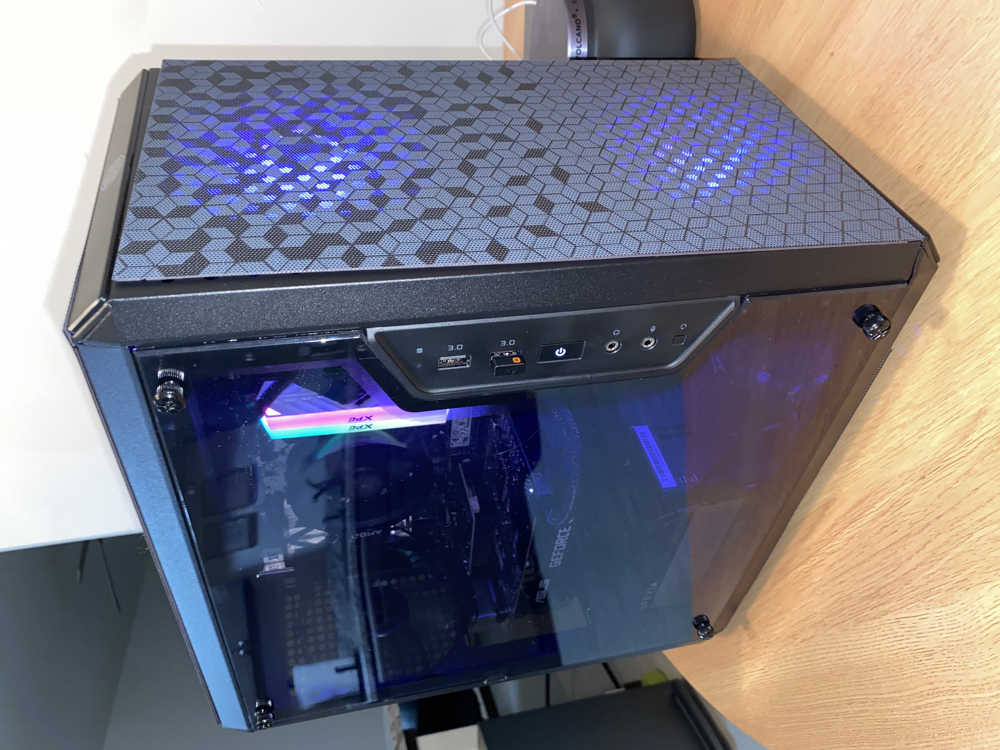
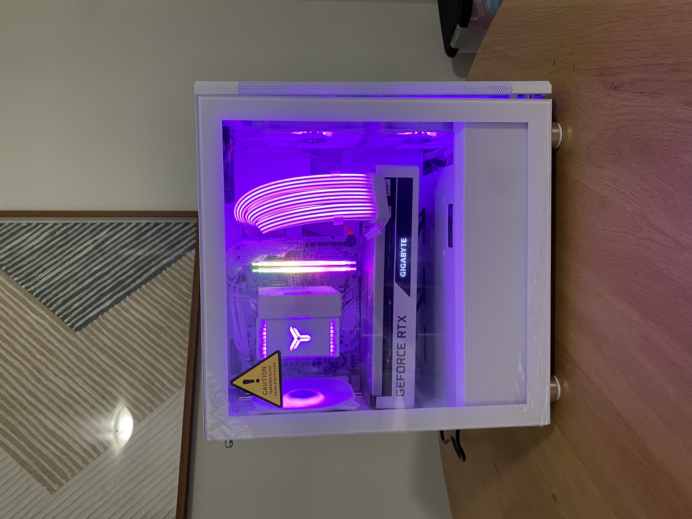
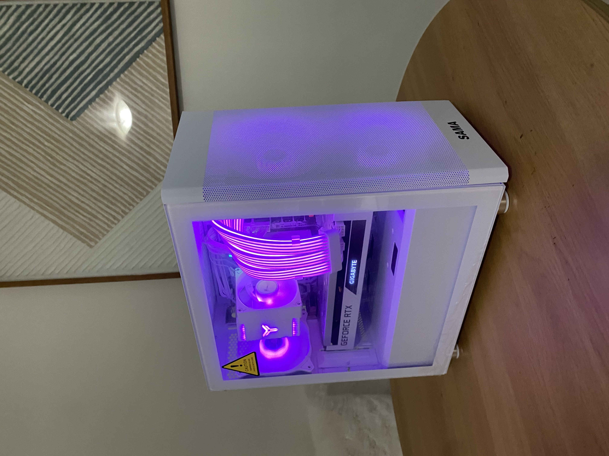
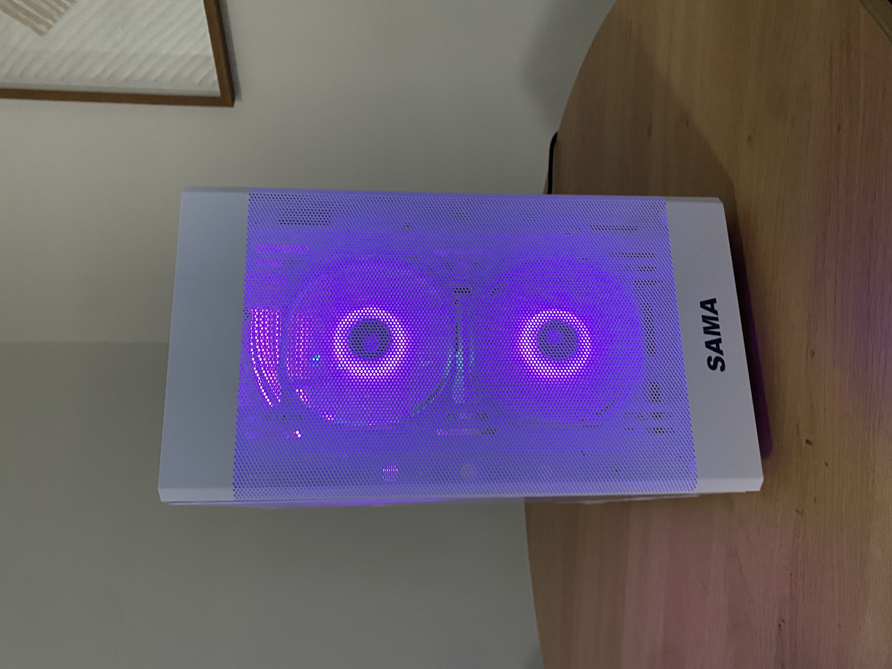
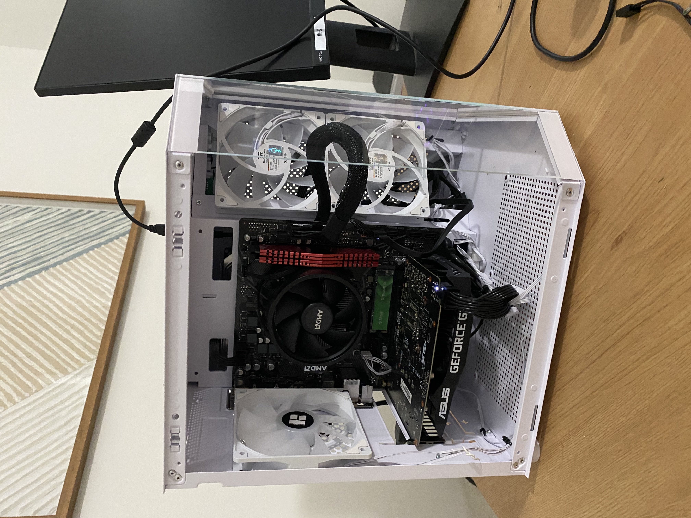

Here you will find various PC builds I have done over the years along with parts specifications and details.

This build was made in late 2024 as a budget gaming PC from a budget of $500. With a GTX 1660 Super with 6GB of GDDR6 memory and
a base clock speed of 1530 MHz can produce 336.0 GB/s of bandwidth,
it is an excellent workstation allowing up to 4 monitors (2x4K resolution and 2x1440p resolution) monitors of use simultaneously and even capable of running most
AAA games at 1080p high settings with good framerates. Due to the limited VRAM and base clock speed, this is not recommended for 1440p+ resolution gaming.
The parts list is as follows:



This build was made in early 2025 as a mid-range gaming PC from a budget of $800. With an RTX 3070 8GB, it can produce up to 448.0 GB/s of bandwith at a base clock of
1500 MHz. It is an excellent workstation capable of running 4x4K monitors simultaneously with no splitters. Capable of running all AAA games at 1080p ultra quality
presets or all AAA games at 1440p high settings with DLSS upscaling.
The parts list is as follows:
Here is a behind-the-scenes look at the build process on this computer:

Here is a look at a custom build I did for a friend on a TIGHT $350 budget during the summer of 2025. I wanted to make sure he had some
RGB lighting and good performance for this price so that he could play the newest games with us.
This build is capable of running esports titles at 1080p max settings with great framerates,
or most games at 1080p medium settings at 60-80fps. The parts list is as follows:
This project is a high-performance Python implementation of the Serpent block cipher, a finalist for the AES standard. It utilizes bit-slice processing to maximize throughput across 32-bit registers.
_READY_